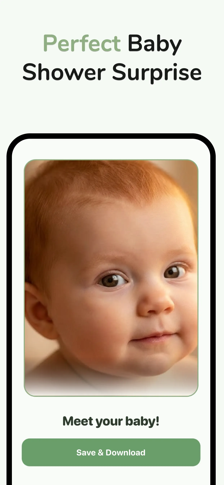

BabyBloom › Guides › Best Time for a 3D Ultrasound
Best Time for a 3D Ultrasound: When You'll See Baby's Face Clearest
Book too early and your baby won't have the chubby cheeks yet; book too late and they'll be curled up with no room to pose. If you want a 3D ultrasound that actually shows your baby's face — and makes a stunning AI portrait afterward — timing is everything.
The golden window: 26–32 weeks
Most imaging specialists agree that weeks 26 to 32 give the best balance for facial detail:
- Enough facial fat. From around week 26, babies develop the fat deposits that define cheeks, lips and nose — before that, features look thin and skeletal on a scan.
- Enough room to move. Until about week 32, there's still amniotic-fluid space for baby to face the probe. Later, they're often wedged head-down against the uterine wall.
- Best fluid-to-baby ratio. Fluid in front of the face is what makes 3D rendering crisp.
Week-by-week: what you'll see
- 20–25 weeks — face is formed but lean; scans can look bony. Fine for anatomy checks, early for portraits.
- 26–29 weeks — cheeks fill in, features defined, plenty of room. Arguably the sweet spot of the sweet spot.
- 30–32 weeks — most newborn-like face; slightly higher chance baby hides against the wall.
- 33+ weeks — beautiful chubby features if baby cooperates; expect more sessions where the face is buried.
Tips for a clearer scan
- Hydrate for days before — good amniotic fluid clarity starts with mom's hydration.
- Have a snack before the session — a little sugar often gets baby moving into a better pose.
- Ask for multiple frames — a face-forward still is the one you want to keep.
- Don't panic about a "squished" frame — pressed against the placenta, everyone looks squished. It's the conditions, not the face (more in 3D ultrasound vs reality).
Turn that scan into your baby's first portrait
A scan from the golden window is the perfect input for an AI baby portrait. BabyBloom reads the facial geometry in your 3D ultrasound — nose, lips, cheeks, proportions — and renders it as a lifelike 2K portrait of your baby's face:
- After your session, photograph or save your best face-forward scan frame.
- Open BabyBloom, choose Ultrasound Mode, and upload the image.
- Select gender and preferences, then generate.
- In about a minute you're looking at the face you've been trying to imagine — ready to share at your shower or print for the nursery.

💡 Scanned too early or baby wouldn't pose? You don't have to wait for another session — upload both parents' photos instead. See the AI baby generator guide.
Got your 3D scan? Meet your baby now.
Free to download · Portrait-quality 2K results in about a minute